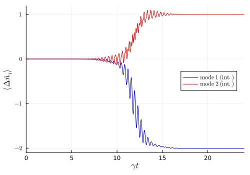

Input-Output Analysis of Quantum Dot SUPER Excitation
This example analyzes the SUPER excitation scheme for quantum dots with the input-output formalism J. Kerber et al., arXiv (2026). Two red-detuned pulses allow for a close to 100% excitation of a two-level quantum emitter. At the microscopic level, the SUPER mechanism exhibits its nonlinear three-photon Raman-type character, leading to a net photon-number change of −2 in one mode and +1 in the other.
In the first part we describe the dynamics within a cumulant expansion approach for coherent light. We then transform into the interaction-picture of the input and output cavities, which allows us to describe the interaction with large Fock states.
We start by loading the needed packages and specifying the model.
using QuantumInputOutputusing SecondQuantizedAlgebrausing QuantumCumulantsusing ModelingToolkitBaseusing OrdinaryDiffEqusing QuantumOpticsusing Plotsusing LaTeXStringssol_values(sol, op, eqs) = get_solution(sol, op, eqs).(sol.t)# Hilbert spaceshu2 = FockSpace(:u2) # virtual input cavity (u2)hu1 = FockSpace(:u1) # virtual input cavity (u1)hs1 = NLevelSpace(:atom, 2) # TLShv1 = FockSpace(:v1) # virtual output cavity (v1)hv2 = FockSpace(:v2) # virtual output cavity (v2)h = tensor(hu2, hu1, hs1, hv1, hv2)# Operatorsau2 = Destroy(h, :a_u2, 1)au1 = Destroy(h, :a_u1, 2)s(i, j) = Transition(h, :s, i, j)av1 = Destroy(h, :a_v1, 4)av2 = Destroy(h, :a_v2, 5)# Symbolic parameters: decay rate and virtual cavity couplings@variables γ::Real gu1::Number gu2::Number gv1::Number gv2::Number@independent_variables t # Symbolic time variable# SLH tripletsG_u2 = SLH(1, gu2'*au2, 0) # input cavity 2G_u1 = SLH(1, gu1'*au1, 0) # input cavity 1G_2lvl = SLH(1, √(γ)*s(1, 2), 0) # 2-level systemG_v1 = SLH(1, gv1'*av1, 0) # output cavity 1G_v2 = SLH(1, gv2'*av2, 0) # output cavity 2# cascade SLH tripletsG_cas = ▷(G_u2, G_u1, G_2lvl, G_v1, G_v2)# Hamiltonian and jump operatorHcas = hamiltonian(G_cas)Lcas = jump_operator(G_cas)[1]Lcasd = adjoint(Lcas)To deal with time-dependent functions in QuantumCumulants.jl, we need to register them.
# Time-dependent couplings@register_symbolic gu1_t(t)@register_symbolic gu2_t(t)@register_symbolic gv1_t(t)@register_symbolic gv2_t(t)g_ls = [gu2, gu1, gv1, gv2]gt_ls = [gu2_t(t), gu1_t(t), gv1_t(t), gv2_t(t)]dict_gt = Dict(g_ls .=> gt_ls)# Insert time-dependenceHcas_t = substitute(Hcas, dict_gt)Lcas_t = substitute(Lcas, dict_gt)Lcasd_t = substitute(Lcasd, dict_gt)We calculate the coupling for the input and output cavities. The modified couplings of the second input and output modes are obtained with the function effective_input_mode and effective_output_mode, respectively. Due to the fast oscillations, the tolerance of the numeric solver needs to be improved. The parameters are taken from T. K. Bracht et al., PRX Quantum 2, 040354 (2021).
# Time griddt = 1e-4Tend = 12*2T = [dt:dt:Tend;]# Numerical pulse parameters in THz and psγ_ = 1e-2 # TLS decay rateΔ1_ = -2π*1.934 # detuning pulse 1Δ2_ = -2π*4.634 # detuning pulse 2Α1_ = 22.65π # pulse area 1Α2_ = 19.29π # pulse area 2σ1_ = 2.4 # temporal FWHM pulse 1σ2_ = 3.04 # temporal FWHM pulse 2τ1_ = 0.0 + 12 # time shift pulse 1τ2_ = -0.73 + 12 # time shift pulse 2# Normalized input modesu1(t_) = 1/(√(σ1_)*π^(1/4)) * exp(-(t_ - τ1_)^2 / (2*σ1_^2)) * exp(-1im*Δ1_*t_)u2(t_) = 1/(√(σ2_)*π^(1/4)) * exp(-(t_ - τ2_)^2 / (2*σ2_^2)) * exp(-1im*Δ2_*t_)# Coupling functionsgu1_t_ = coupling_input(u1, T)gu1_t(t) = gu1_t_(t)gv1_t_ = coupling_output(u1, T)gv1_t(t) = gv1_t_(t)# Cascade-modified couplings (effective modes)abstol = 1e-10reltol = 1e-10u_fcts = [u1, u2]u2_eff = effective_input_mode(u_fcts, T, 2; abstol, reltol)gu2_t_ = coupling_input(u2_eff, T)gu2_t(t) = gu2_t_(t)v_fcts = [u1, u2] # output modes = input modesv2_eff = effective_output_mode(v_fcts, T, 2; abstol, reltol)gv2_t_ = coupling_output(v2_eff, T)gv2_t(t) = gv2_t_(t)After deriving the mean-field equations we define the initial state, create the ODE problem and solve the dynamics.
# First-order cumulant expansionorder = 1ops = [au1, au2, s(2, 2), s(2, 1), av1, av2]eqs = meanfield(ops, Hcas_t, [Lcas_t]; Jdagger = [Lcasd_t], order = order, iv = t)# Coherent-state amplitudesα1 = Α1_ / (2*√(2)*π^(1/4)*√(σ1_*γ_)) # field 1α2 = Α2_ / (2*√(2)*π^(1/4)*√(σ2_*γ_)) # field 2u0 = [α1, α2, 0, 0, 0, 0.0im]# Solve ODE systemsys = mtkcompile(System(eqs; name = :sys))u0_p_map_cas = Dict([unknowns(sys); γ] .=> [u0; γ_])prob_cas = ODEProblem(sys, u0_p_map_cas, (dt, Tend))sol = solve(prob_cas, Tsit5(); abstol, reltol)# Expectation valuest_cas = sol.t # time vectors22_cas = sol_values(sol, s(2, 2), eqs)nu1_cas = abs2.(sol_values(sol, au1, eqs))nu2_cas = abs2.(sol_values(sol, au2, eqs))nv1_cas = abs2.(sol_values(sol, av1, eqs))nv2_cas = abs2.(sol_values(sol, av2, eqs))common = (; xlims = (t_cas[1]-0.01, t_cas[end]))p1 = plot( t_cas, real.(s22_cas); color = :red, label = false, ylabel = L"\langle\hat\sigma^{ee}\rangle", common...,)p2 = plot( t_cas, nu1_cas; color = :blue, label = L"\langle \hat{n}_{u_1} \rangle", ylabel = L"\langle\hat{n}_i\rangle", xticks = ([0, 10, 20], ["", "", ""]), yticks = ([0, 5e3, 10e3, 15e3], [L"0", L"5\cdot10^3", L"10\cdot10^3", L"15\cdot10^3"]), ylims = (nv1_cas[1]-0.5e3, nu1_cas[1]+0.5e3), legend = :left, common...,)plot!(p2, t_cas, nv1_cas; color = :red, label = L"\langle \hat{n}_{v_1} \rangle")plot!( p2, t_cas, nu2_cas; color = :blue, ls = :dash, label = L"\langle \hat{n}_{u_2} \rangle",)plot!( p2, t_cas, nv2_cas; color = :red, ls = :dash, label = L"\langle \hat{n}_{v_2} \rangle",)p3 = plot( t_cas, nu1_cas .+ nv1_cas .- nu1_cas[1]; color = :blue, label = L"\mathrm{mode~1}", ylabel = L"\langle\Delta\hat{n}_i\rangle", xlabel = L"\gamma t", xticks = ([0, 10, 20], latexstring.([0, 10, 20])), yticks = ([-4, -2, 0, 2, 4], latexstring.([-4, -2, 0, 2, 4])), legend = :topleft, common...,)plot!(p3, t_cas, nu2_cas .+ nv2_cas .- nu2_cas[1]; color = :red, label = L"\mathrm{mode~2}")plot(p1, p2, p3; layout = (3, 1), size = (600, 700))
We can see the net photon-number change of −2 in one mode and +1 in the other.
Interaction picture
In the following, we will transform into the interaction picture of the virtual cavities and solve the dynamics.
# Interaction picture: cavity dynamicsH_uv = hamiltonian(▷(G_u2, G_u1, G_v1, G_v2))H_int_ = simplify(Hcas - H_uv)M(i, j) = Symbolics.variable(Symbol("M_{$(i)$(j)}"); T = Number)a0_ls = [au2, au1, av1, av2]la = length(a0_ls)a_int_ls = [sum(M(i, j)*a0_ls[j] for j = 1:la) for i = 1:la]int_dict = Dict(a0_ls .=> a_int_ls)H_int = substitute(H_int_, int_dict)L_int = simplify(substitute(Lcas, int_dict))Ld_int = simplify(substitute(Lcasd, int_dict))# Coefficient matrix MMat = Matrix{Any}(undef, la, la)for i = 1:la, j = 1:la name = Symbol("Ma_$(i)$(j)") @eval @register_symbolic $name(t) Mat[i, j] = getfield(mod, name)(t)endMat_ls = [Mat[i, j] for i = 1:la for j = 1:la]M_ls = [M(i, j) for i = 1:la for j = 1:la]# Time-evolution of the matrix M(t)A_uv = coupling_matrix((gu2_t_, gu1_t_, gv1_t_, gv2_t_))M_t = solve_mode_evolution(A_uv, T)for i = 1:la, j = 1:la fname = Symbol("Ma_$(i)$(j)") @eval begin $fname(t) = M_t(t)[$i, $j] endenddict_Mt = Dict(M_ls .=> Mat_ls)dict_gt_Mt = merge(dict_gt, dict_Mt)H_int_t = substitute(H_int, dict_gt_Mt)L_int_t = substitute(L_int, dict_gt_Mt)Ld_int_t = substitute(Ld_int, dict_gt_Mt)eqs_int = meanfield(ops, H_int_t, [L_int_t]; Jdagger = [Ld_int_t], order = order, iv = t);# Solve ODE system in interaction picturesys_int = mtkcompile(System(eqs_int; name = :sysI))u0_p_map_int = Dict([unknowns(sys_int); γ] .=> [u0; γ_])prob_int = ODEProblem(sys_int, u0_p_map_int, (dt, Tend))sol_int = solve(prob_int, Tsit5(); abstol, reltol)# Expectation valuest_int = sol_int.ts22_int = real.(sol_values(sol_int, s(2, 2), eqs_int))nu1_int = abs2.(sol_values(sol_int, au1, eqs_int))nu2_int = abs2.(sol_values(sol_int, au2, eqs_int))nv1_int = abs2.(sol_values(sol_int, av1, eqs_int))nv2_int = abs2.(sol_values(sol_int, av2, eqs_int))pl4 = plot( t_int, nu1_int .- nu1_int[1]; color = :blue, label = L"\mathrm{mode~1~(int.)}", ylabel = L"\langle\Delta\hat{n}_i\rangle", xlabel = L"\gamma t", xlims = (t_int[1]-0.01, t_int[end]), yticks = ([-2, -1, 0, 1], latexstring.([-2, -1, 0, 1])), legend = :right, size = (500, 350),)plot!(pl4, t_int, nu2_int .- nu2_int[1]; color = :red, label = L"\mathrm{mode~2~(int.)}")
In the interaction picture we can directly observe the photon number change of -2 in one mode and +1 in the other.
Fock state input
Let us now compare the dynamics for coherent input pulses with the case of incident non-classical photon number eigenstates (Fock states), where we choose states with the same mean photon numbers as for the coherent pulses. Since in the atom-field interaction only a few photons are exchanged, the quantum states of the excitation pulses are only changed by a couple of photons, we only need to keep a couple of nearby Fock states in the computational basis.
We define the basis of the system and create the dictionary for the time-dependent variables to translate the Hamiltonian and Lindblad operator to a QuantumOptics.jl operator.
n1_fock = round(Int, abs2(α1))n2_fock = round(Int, abs2(α2))bu1 = FockBasis(n1_fock+2, n1_fock-6)bu2 = FockBasis(n2_fock+3, n2_fock-3)bs1 = NLevelBasis(2)bv1 = FockBasis(1)bv2 = FockBasis(1)b = tensor([bu2, bu1, bs1, bv1, bv2]...)g_t_ls = [gu2_t_, gu1_t_, gv1_t_, gv2_t_]M_t_ls = [t -> M_t(t)[i, j] for i = 1:la for j = 1:la]dict_fock = Dict([g_ls; M_ls] .=> [g_t_ls; M_t_ls])H_int_fock = to_numeric(H_int, b; parameter = Dict(γ=>γ_), time_parameter = dict_fock)L_int_fock = to_numeric(L_int, b; parameter = Dict(γ=>γ_), time_parameter = dict_fock)TimeDependentSum(dim=504x504)
basis: [Fock(cutoff=8523, offset=8517) ⊗ Fock(cutoff=14881, offset=14873) ⊗ NLevel(N=2) ⊗ Fock(cutoff=1) ⊗ Fock(cutoff=1)]To solve the dynamics, we create the time-dependent function for the open quantum system and define the initial state.
function input_output(t, ρ) Ht = H_int_fock(t) J = [L_int_fock(t)] return Ht, J, QuantumOptics.dagger.(J)end# initial stateψu2 = fockstate(bu2, n2_fock)ψu1 = fockstate(bu1, n1_fock)ψs1 = nlevelstate(bs1, 1)ψv1 = fockstate(bv1, 0)ψv2 = fockstate(bv2, 0)ψ0 = tensor(ψu2, ψu1, ψs1, ψv1, ψv2)T_fock = [0:0.001:1;]*T[end]# t_fock, ρt_fock = timeevolution.master_dynamic(T_fock, ψ0, input_output; abstol, reltol)using Randomt_fock, ρt_fock = timeevolution.mcwf_dynamic(T_fock, ψ0, input_output; abstol, reltol)Due to the relatively long computation time of timeevolution.master_dynamic, we simulate a single trajectory with timeevolution.mcwf_dynamic.
# Expectation valuess22_fock = real.(expect(s(2, 2), ρt_fock))nu1_fock = real.(expect(au1'au1, ρt_fock))nu2_fock = real.(expect(au2'au2, ρt_fock))nv1_fock = real.(expect(av1'av1, ρt_fock))nv2_fock = real.(expect(av2'av2, ρt_fock))common = (; xlims = (t_fock[1]-0.01, t_fock[end]))p3_1 = plot( t_int, s22_int; color = :blue, label = L"\mathrm{coherent state}", ylabel = L"\langle\hat\sigma^{ee}\rangle", common...,)plot!(p3_1, t_fock, s22_fock; color = :red, label = L"\mathrm{Fock state}")p3_2 = plot( t_fock, nu1_fock .- nu1_fock[1]; color = :green, label = L"\mathrm{Fock: mode~1}", ylabel = L"\langle\Delta\hat{n}_i\rangle", xlabel = L"\gamma t", xlims = (t_fock[1]-0.01, t_fock[end]), yticks = ([-2, -1, 0, 1], latexstring.([-2, -1, 0, 1])), legend = :right, common...,)plot!( p3_2, t_fock, nu2_fock .- nu2_fock[1]; color = :yellow, label = L"\mathrm{Fock: mode~2}",)plot!( p3_2, t_int, nu1_int .- nu1_int[1]; color = :blue, label = L"\mathrm{Coherent: mode~1}",)plot!( p3_2, t_int, nu2_int .- nu2_int[1]; color = :red, label = L"\mathrm{Coherent: mode~2}",)pl3 = plot(p3_1, p3_2; layout = (2, 1), size = (600, 500))
Due to the vanishing relative phase of the Fock states, the oscillations disappear.
Package versions
These results were obtained using the following versions:
using InteractiveUtilsversioninfo()using PkgPkg.status( [ "QuantumInputOutput", "SecondQuantizedAlgebra", "QuantumCumulants", "ModelingToolkitBase", "OrdinaryDiffEq", "QuantumOptics", "Plots", "LaTeXStrings", ], mode = PKGMODE_MANIFEST,)Julia Version 1.13.0
Commit d1c37793dd2 (2026-09-09 19:00 UTC)
Build Info:
Official https://julialang.org release
Platform Info:
OS: Linux (x86_64-linux-gnu)
CPU: 4 × AMD EPYC 7763 64-Core Processor
WORD_SIZE: 64
LLVM: libLLVM-20.1.8 (ORCJIT, znver3)
GC: Built with stock GC
Threads: 1 default, 0 interactive, 1 GC (on 4 virtual cores)
Environment:
JULIA_PKG_SERVER_REGISTRY_PREFERENCE = eager
JULIA_DEBUG = Documenter,Literate
JULIA_NUM_THREADS = 1
Status `~/work/QuantumInputOutput.jl/QuantumInputOutput.jl/docs/Manifest.toml`
[47edcb42] ADTypes v1.24.0
[1520ce14] AbstractTrees v0.4.5
⌅ [7d9fca2a] Arpack v0.5.3
[4fba245c] ArrayInterface v7.30.1
[aae01518] BandedMatrices v1.12.0
[caf10ac8] BipartiteGraphs v0.1.14
[8e7c35d0] BlockArrays v1.10.0
⌅ [861a8166] Combinatorics v1.0.2
[38540f10] CommonSolve v0.2.14
[34da2185] Compat v4.18.1
[187b0558] ConstructionBase v1.6.0
[d38c429a] Contour v0.6.3
⌅ [82cc6244] DataInterpolations v9.5.0
[864edb3b] DataStructures v0.19.6
[2b5f629d] DiffEqBase v7.21.0
[459566f4] DiffEqCallbacks v4.19.3
[77a26b50] DiffEqNoiseProcess v5.36.3
[b552c78f] DiffRules v1.16.0
[a0c0ee7d] DifferentiationInterface v0.7.21
[ffbed154] DocStringExtensions v0.9.5
[5b8099bc] DomainSets v0.8.1
[4e289a0a] EnumX v1.0.7
[f151be2c] EnzymeCore v0.8.21
[e2ba6199] ExprTools v0.1.11
[c87230d0] FFMPEG v0.4.5
[7a1cc6ca] FFTW v1.10.0
[1a297f60] FillArrays v1.17.0
⌅ [53c48c17] FixedPointNumbers v0.8.6
[f6369f11] ForwardDiff v1.4.6
[069b7b12] FunctionWrappers v1.1.3
[77dc65aa] FunctionWrappersWrappers v1.13.0
[28b8d3ca] GR v0.73.27
[86223c79] Graphs v1.15.0
[3263718b] ImplicitDiscreteSolve v2.3.0
[8197267c] IntervalSets v0.7.14
[42fd0dbc] IterativeSolvers v0.9.4
[1019f520] JLFzf v0.1.11
[682c06a0] JSON v1.8.0
[ccbc3e58] JumpProcesses v9.32.3
[0b1a1467] KrylovKit v0.10.4
[b964fa9f] LaTeXStrings v1.4.1
[23fbe1c1] Latexify v0.16.12
[7a12625a] LinearMaps v3.11.4
[1914dd2f] MacroTools v0.5.16
[442fdcdd] Measures v0.3.3
[7771a370] ModelingToolkitBase v1.69.2
⌅ [2e0e35c7] Moshi v0.3.9
[d8a4904e] MutableArithmetics v1.8.0
[77ba4419] NaNMath v1.1.4
[e7bfaba1] NumericalIntegration v0.3.4
[6fe1bfb0] OffsetArrays v1.17.0
⌅ [bac558e1] OrderedCollections v1.8.2
[1dea7af3] OrdinaryDiffEq v7.8.1
[6ad6398a] OrdinaryDiffEqBDF v2.4.7
[bbf590c4] OrdinaryDiffEqCore v4.17.0
[50262376] OrdinaryDiffEqDefault v2.6.0
[1344f307] OrdinaryDiffEqLowOrderRK v2.2.5
[43230ef6] OrdinaryDiffEqRosenbrock v2.7.1
[b1df2697] OrdinaryDiffEqTsit5 v2.1.4
[79d7bb75] OrdinaryDiffEqVerner v2.4.1
[ccf2f8ad] PlotThemes v3.3.0
[995b91a9] PlotUtils v1.4.4
[91a5bcdd] Plots v1.41.7
[d236fae5] PreallocationTools v1.7.1
[aea7be01] PrecompileTools v1.3.4
[35bcea6d] QuantumCumulants v0.7.1
[18f9eda6] QuantumInputOutput v0.5.3 `~/work/QuantumInputOutput.jl/QuantumInputOutput.jl`
[5717a53b] QuantumInterface v0.4.4
[6e0679c1] QuantumOptics v1.2.9
[4f57444f] QuantumOpticsBase v0.5.15
[795d4caa] ReadOnlyDicts v1.0.1
[3cdcf5f2] RecipesBase v1.3.4
[01d81517] RecipesPipeline v0.6.12
[731186ca] RecursiveArrayTools v4.5.1
[189a3867] Reexport v1.2.2
[05181044] RelocatableFolders v1.0.1
[ae029012] Requires v1.3.1
[7e49a35a] RuntimeGeneratedFunctions v0.5.26
[9dfe8606] SCCNonlinearSolve v1.15.3
[0bca4576] SciMLBase v3.53.2
[a6db7da4] SciMLLogging v2.1.0
[431bcebd] SciMLPublic v1.3.0
[53ae85a6] SciMLStructures v1.10.5
[6c6a2e73] Scratch v1.3.0
⌅ [f7aa4685] SecondQuantizedAlgebra v0.11.0
[efcf1570] Setfield v1.1.2
[992d4aef] Showoff v1.1.1
[727e6d20] SimpleNonlinearSolve v2.14.3
[276daf66] SpecialFunctions v2.9.0
[90137ffa] StaticArrays v1.9.20
[1e83bf80] StaticArraysCore v1.4.4
[10745b16] Statistics v1.11.5
[2913bbd2] StatsBase v0.34.13
[789caeaf] StochasticDiffEq v7.2.0
[2efcf032] SymbolicIndexingInterface v0.3.55
[d1185830] SymbolicUtils v4.46.4
[0c5d862f] Symbolics v7.39.2
[ed4db957] TaskLocalValues v0.1.3
[8ea1fca8] TermInterface v2.0.0
[3a884ed6] UnPack v1.0.2
[1cfade01] UnicodeFun v0.4.1
[41fe7b60] Unzip v0.2.0
[2a0f44e3] Base64 v1.11.0
[ade2ca70] Dates v1.11.0
[f43a241f] Downloads v1.7.0
[b77e0a4c] InteractiveUtils v1.11.0
[8f399da3] Libdl v1.11.0
[37e2e46d] LinearAlgebra v1.13.0
[44cfe95a] Pkg v1.13.0
[de0858da] Printf v1.11.0
[3fa0cd96] REPL v1.11.0
[9a3f8284] Random v1.11.0
[9e88b42a] Serialization v1.11.0
[2f01184e] SparseArrays v1.13.0
[fa267f1f] TOML v1.0.3
[cf7118a7] UUIDs v1.11.0
Info Packages marked with ⌅ have new versions available but compatibility constraints restrict them from upgrading. To see why use `status --outdated -m`
This page was generated using Literate.jl.